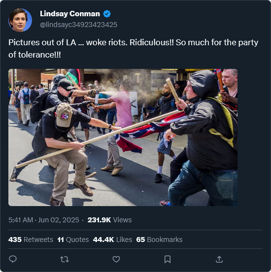

Lesson 7
Substantiate the Tweet
- Anyone can post a screenshot that looks real, or even fake a tweet entirely. It took me all of 2 seconds to find a fake tweet generator online.
- It's all about verifying. That extra minute you take to check if something is valid will leave you more informed than most.
- In this lesson, you'll learn how to:
- Reverse search images or text
- Look for original sources
- Decide whether a claim is real, fake, or just taken out of context
- This kind of "investigation" is how journalists and fact-checkers separate truth from noise.
Fake Tweet Analyzer
